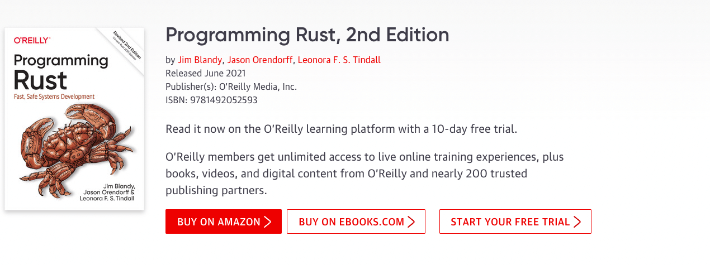

Programming Rust
这本书是 O'Reilly 出版社的，对本书进行了学习和记录，内容大体上没有遗漏，只是对一些描述做了精简，出版社书籍链接。文档源码 gamelife1314/gamelife1314.github.io。

表述有误的地方请评论或者提 pr 指正。
- 《第3章-Fundamental Types》
- 《第4章-Ownership and Moves》
- 《第5章-References》
- 《第6章-Expressions》
- 《第7章-Error Handling》
- 《第8章-Crates and Modules》
- 《第9章-Structs》
- 《第10章-Enums and Patterns》
- 《第11章-Traits and Generics》
- 《第12章-Operator Overloading》
- 《第13章-Utility Traits》
- 《第14章-Closures》
- 《第15章-Iterators》
- 《第16章-Collections》
- 《第17章-Strings and Text》
- 《第18章-Input and Output》
- 《第19章-Concurrency》
- 《第20章-Asynchronous Programming》
- 《第21章-Macros》
- 《第22章-Unsafe Code》
- 《第23章-Foreign Functions》
其他文章
- Rust 生命周期
- Rust 学习笔记
- Rustup 介绍
- Rust 交叉编译
- Rust 二进制文件体积减小
- 【Rust】二进制体积减小
- Rust 格式化
- Rust 正则表达式
- 文件和目录
- anyhow & thiserror
- Rust 在线题目测试
- gdb 速查手册
- lldb 使用帮助
- 用 GitHub Actions 进行持续集成
- GitHub Action 构建 Rust 程序加速
- Rust Docker Tutorial
- 【Rust日报】关于 pprof-rs 内部工作原理的一些笔记
WEB
- reqwest：高级
HTTP客户端； - actix-web：
Web框架； - surf：跨平台
HTTP客户端，简单易用； - rocket：
web框架； - axum：使用
Tokio、Tower和Hyper构建的符合人体工程学的模块化Web框架； - diesel：
Rust的ORM框架； - SeaORM：
Rust的ORM框架； - sqlx：异步的纯
Rust实现的Sql工具箱； - yew：
Yew是一个设计先进的Rust框架，目的是使用WebAssembly来创建多线程的前端web应用。 - seed：创建
Web前端应用的Rust框架； - MoonZoon：
Rust全栈框架； - comrak：
markdown解析；
FFI
编译
- min-sized-rust：减小
Rust二进制文件体积；
协议
- hyper：快速的
HTTP实现； - tonic：原生的
grpc客户段和服务端，支持async/await； - prost：
Rust的protocol buffer实现； - tungstenite：
websocket协议实现；
测试
- headless_chrome：一个高级的控制无头浏览器或者
Chromium的框架； - thirtyfour：类似
Selenium的自动化测试框架； - fantoccini：通过
WebDriver以编程方式与网页交互的高级 API；
GUI
命令行
云原生
嵌入式
- wg：嵌入式设备工作组的协调存储库；
- akri：一个管理嵌入式设备的云原生项目；
- awesome-embedded-rust
区块链
数据库
- bonsaidb：
Rust写的本地数据库；
数据类型
静态网站
wasmtime
- spin：
Spin用于使用WebAssembly构建和运行快速、安全和可组合的云微服务； - trunk：构建、打包以及发布
wasm应用； - wasmer：
Wasmer提供基于WebAssembly的超轻量级容器，其可以在任何地方运行：从桌面到云、以及IoT设备，并且也能嵌入到 任何编程语言中； - wasmtime：单独的
wasm运行时； - WasmEdge：WasmEdge 是一个轻量级、高性能和可扩展的 WebAssembly 运行时，适用于云原生、边缘和去中心化应用程序。它为无服务器应用程序、嵌入式功能、微服务、智能合约和物联网设备提供支持；
- rustwasm：
rustwasm生态系统； - wasm-pack：
wasm工作流工具； - wasm-bindgen：提供
Wasm模块和JavaScript之间级交互的高级API。 - bytecodealliance
机器学习
日志监控
并发异步
- smol：一个小而快的异步运行时；
- rayon：计算密集型任务的任务分解；
- tokio：
Tokio是一个事件驱动的非阻塞I/O平台，用于使用Rust编程语言编写异步应用程序。 - actix：
Rust的actor框架； - bastion：高可用分布式容错运行时；
- waker_fn：转换闭包为
waker； - crossbeam：提供很多用于并发编程的工具，例如线程阻塞；
- async_trait：提供了一个宏，可以在
trait中包含异步的方法； - futures-lite：完全兼容 futures，提供了
pin!；
其他 crate
- thiserror：自动派生标准库中的
std::error::Error； - anyhow：提供了
anyhow::Result<T>用于任何可能失败返回错误的函数； - lazy_static：可以用于初始化全局可变静态变量；
- [once_cell`](https://crates.io/crates/once_cell)：`once_cell`提供了`unsync::OnceCell`和`sync::OnceCell`这两种`Cell`，用来存储堆上的信息，并且具有最多只能赋值一次的特性；
- unicode-width：获取
Unicode字符宽度； - enum_primitive：提供宏能自动从数字转换成枚举；
- serde_json：
json序列化； - argonautica：使用
Argon2 hashing algorithm进行密码hash； - parking_lot：提供了比标准库更快的
Mutex等； - itertools：扩展了内置的
Iterator，提供了更多的迭代适配器方法； - bytes：处理二进制内容的库；
- colored：在终端中添加颜色的最简单方法；
- tabled：以表格的形式输出结构体和枚举；
- chrono：
Rust的日期和时间处理库； - nom：解析器组合库；
- rusoto_core：
Rust实现的AWSSDK； - polars：用于
Rust和Python快速的DataFrame库； - pprof-rs：借助
backtrace-rs实现的RustCPU分析器；
学习资料
- Rust 程序设计语言
- Rust 语言圣经
- Rust 秘典
- Rust 秘典（中文）
- Rust 版本指南
- 通过例子学 Rust
- 《Rust Macros小书》
- Cargo 手册
- Rustdoc 手册
- Rustc 手册
- 命令行手册
- 嵌入式手册
- WEBASSEMBLY 手册
- Rust 参数手册
- rustlings：
Rust知识检测； - rust-quiz：
Rust知识检测； - spec.ferrocene.dev
在线工具
- releases.rs
- Replit：在线支持
crate和cargo； - Godbolt：支持在线查看
Rust汇编生成；